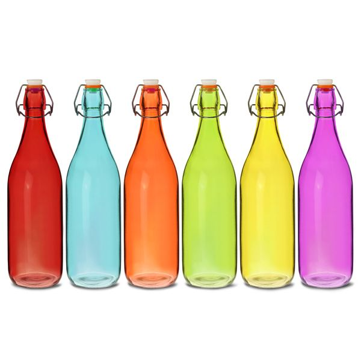

Bottles Objects Detection
Observe the Red Squares Around the objects Detected. It will show the the Names of the Objects too.
Back
Status - Detecting Objects....
There are 5 Big Objects in the Room from which the COCOSSD Model has Identified 3 Objects
